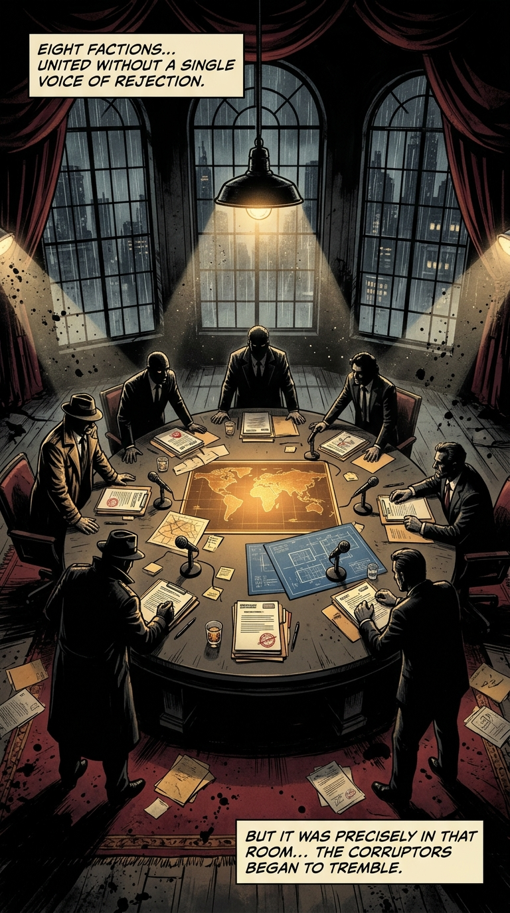

DOSSIER FORENSIK // INVESTIGASI KHUSUS
KUMPARAN-RUU-PERAMPASAN-ASET
PASAL YANG TERKUBUR
“Sebuah pasal bernomor... tentang perampasan tanpa pidana... Tiba-tiba lolos di Komisi III. Padahal naskah itu... sudah mengendap bertahun-tahun di laci.”